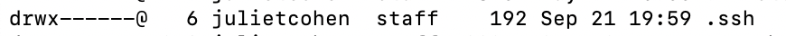

7 Lab Data Access
7.1 SSH key pairs
SSH = “secure shell”, a network protocol that establishes encrypted connections between machines for remote access
SSH key pairs are 2 files you generate on your machine that authenticate you on another machine via encryption and then decryption. One file is only stored locally, and the other is your “public” key that you upload to the destination server.
- SSH keys are optional on many servers, but required for others like GRIT. When they are optional, you can alternatively login by being prompted for your password in your IDE.
- An extra step of creating a passkey for your authentication is optional, just an extra layer of security. When you are prompted for this, your password is hidden.
- When you SSH to the destination server, the encryption & decryption of the key files authenticates you.
7.1.1 Generate a key pair
Generate a key pair on your source machine (laptop or server).
- The string portion will be tagged onto the end of the public key, insert something that will help the destination server admins attribute this key to you, like your email. (
-C= “comment”) - The “ed25519” part represents the algorithm used to generate the key: Edwards-curve Digital Signature Algorithm. It’s newer and stronger than old algorithms like “RSA”, produces smaller keys, generates keys faster, and importantly is supported by both Linux and Mac
cd ~
ssh-keygen -t ed25519 -C "some_string"2 files are generated: ~/.ssh/id_ed25519 and ~/.ssh/id_ed25519.pub
You can use the same key pair for multiple destination machines, making it easier to manage because you don’t have to keep track of each pair, but this also poses more of a risk if it’s compromised.
7.1.2 Upload the public key
For GRIT, upload your pub key through this form.
Normally, you would be responsible for uploading the public key to the server yourself with this command:
ssh-copy-id -i ~/.ssh/id_ed25519_vscode.pub username@remote.server.eduThis command does not generate a new file on the destination server, it just adds a line to the ~/.ssh/authorized_keys file. Then on your local machine, you would add this host to your IDE config so it looks like this:
Host server_name.cnsi.ucsb.edu
HostName server_name.cnsi.ucsb.edu
User your_username
IdentityFile ~/.ssh/id_ed25519_name_of_fileNow you will be able to SSH in the command line with just ssh server_name.cnsi.ucsb.edu and just select the remote hostname in your IDE without typing in a password.
7.1.3 Ensure correct permissions
Ensure you have the right directory and file permissions set. The ~/.ssh directory should be private, and the private key file itself should be readable and writable only by you. The public key should be readable by everyone.
chmod 700 ~/.ssh # only owner can access (rw-------)
chmod 600 ~/.ssh/id_ed25519 # only readable, writable, and executable by me (rwx------)
chmod 644 ~/.ssh/id_ed25519.pub # readable by everyone (rw-r--r--)SSH will refuse insecure keys. If you get a permission denied error, it is likely that the directory or file permissions are too open. SSH is looking out for you! Here’s an example of this error message:

7.1.4 Understanding user permissions
User, group, and other have permissions outlined when you run ls -al.

The first character designates it as a file (-) or direcotry (d). After the first character, the following 3 are the user permissions, the next 3 are the group permissions, and the last 3 are the permissions for other.
r = “read”, w = “write”, x = “execute” (run script)
7.1.5 Accessing Nextcloud Storage via SSH
Specify the local key file within the command.
ssh -i ~/.ssh/id_ed25519 username@ssh.grit.ucsb.edu- Access destination directories
username@ssh.grit.ucsb.edu:/home/oliver-laborusername@ssh.grit.ucsb.edu:/home/username - If you set up a passkey when you generated the key pair, you will be prompted to enter it
- The first time, seeing a warning “The authenticity of host can’t be established” is not reason for concern. Continue logging in.
- There are several other SSH endpoints within GRIT, but this is the only one that works for me. I expect more to work over time.

In order to break the connection, kill the terminal or use the exit command.
7.1.6 tmux
It’s always wise to use a persistent shell when making transfers a large amount of data or files.
You can name your tmux sessions, but the default name for a session is “0”
tmux
tmux ls
tmux attach -t 0
tmux kill-session -t 0A tmux terminal is designated by a green bar at the bottom:
Note: If you do not use a tmux session and your terminal is killed midway through an rsync, the process will abort. But you can just run the same rsync command again and it will pick up where it left off, checking that some files were already transferred.
7.1.7 rsync
See the Options Summary section of the man page
- When making transfers within the same machine, common to use
-aarchive mode, which is a combination of multiple options:-rlptgoD-rrecursive, use when transferring a directory hierarchy-lcopy symlinks as symlinks-ppreserve permissions-tpreserve timestamps (good practice)-gpreserve group-opreserve owner-Dcopies device files as such (like those in/devdirectories) and preserve special files, not necessary for our purposes
- Include
-zfor compression - Include
--dry-runwhen want to see what will be transferred before executing. - Include
-vfor verbose if you want to see what is being copied in real time. - When specifying the source directory, including a trailing slash will transfer everything within the directory but not the top level dir. Usually we want to transfer the top level dir, so omit the trailing slash.
- Ensure the quotes are not fancy. Re-type the quotes before running the rsync command if copied the command from another text editor.
- When using an SSH key pair, include the filename for the file in the command so rsync knows where to pull from.
rsync -tvr -e "ssh -i ~/.ssh/id_ed25519" safegraph jscohen@ssh.grit.ucsb.edu:/home/oliver-lab/covid/covid-raw-data/7.1.8 Check directory and file contents
Check number of files in a directory, recursively
find directory_name -type f | wc -lCheck number of bytes in a directory, summing up all files recursively, auto-scaling the bytes to human readable format (MB, GB, etc.). Note that this number can vary slightly accross machines with the same data due to metadata overhead.
du -sh directory_nameCheck if files are identical using SHA256 checksums (string that uniquely represents file contents).
sha256 file1.txt file2.txtCheck if files are identical by comparing bytes. No output means they are the same.
cmp file1.txt file2.txt7.1.9 Aliases
Commands you run often can be made into a shortcut. This is simply a line added to your ~/.bashrc script:
alias myalias="command_to_execute"Then open a new terminal so the .bashrc script is loaded.
I created an alias for my SSH login to grit:
7.1.10 Accessing Nextcloud Storage via a browser
7.2 Commands on Pod
| Command | Use |
|---|---|
ssh {username}@pod-login1.cnsi.ucsb.edu |
login to pod |
srun --pty bash -i |
run in a tmux session, launch an interactive job on a normal memory node (add to the queue) that doesn’t respect SBATCH commands in the sh files run |
sbatch script.sh |
launch a non-interactive job on a normal memory node (add to the queue) |
sbatch -p largemem script.sh |
launch a non-interactive job on a high memory node (add to the queue) |
squeue -u {username} |
print information regarding requested jobs such as JOBID, NAME, NODES, etc. |
ssh node48 |
open terminal in the appropriate node number such as node 48 |
scontrol show job {jobID} |
show detailed info about your job, such as endtime |
top -u {username} |
show node memory usage and only your processes, with %MEM column showing each process’s memory usage (htop is not available on Pod) |
module load R/4.1.3 gdal/2.2.3 proj/5.2 |
load modules in one of the terminals on the job node |
R |
open R module in terminal |
q() |
exit out of R module, switch wd to ~ |
sinfo -o "%n %m" |
shows the total amount of memory per node for all nodes on the server |
sinfo -o "%n %m %C" | awk '$2 >= 512000' |
shows the core availability of each node that has at least 500GB |